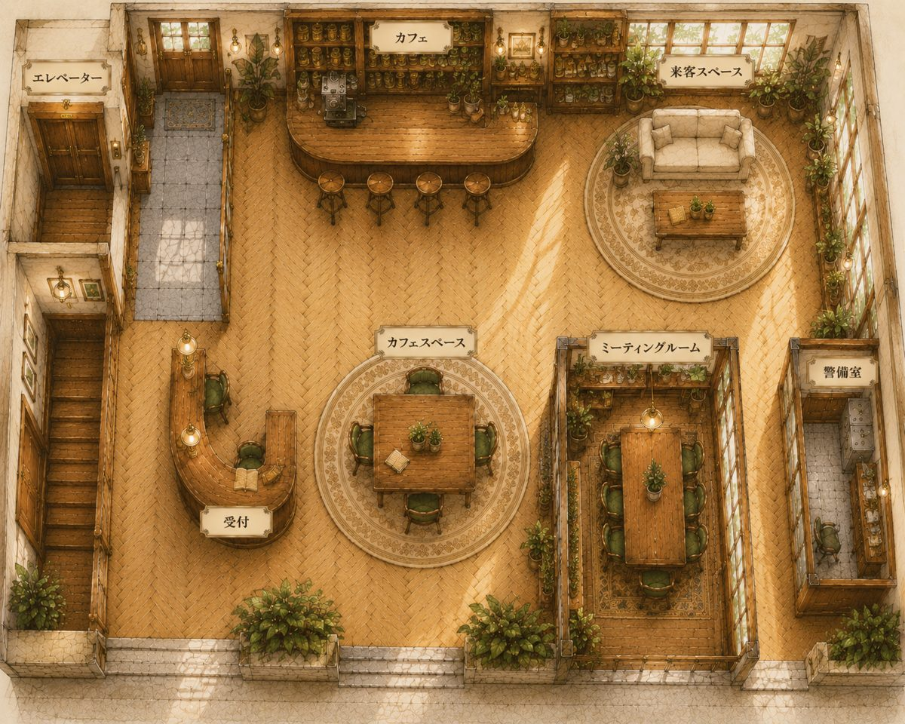

AIエージェント
設計・開発
Claude Code を軸にしたカスタムエージェント・スキル設計、業務フローのAI自動化を支援します。 医療機関・小規模事業の「現場でちゃんと回る」導入設計が得意です。
医療 × AIエージェントコンサルタント ｜ AIライター
医療現場15年の実務経験 × AIエージェント開発。
現場がわかるから、使われるAIをつくれます。
月紫 — Tsukushi —
Services
Claude Code を軸にしたカスタムエージェント・スキル設計、業務フローのAI自動化を支援します。 医療機関・小規模事業の「現場でちゃんと回る」導入設計が得意です。
「実体験で書く」を強みに、一次情報に基づいた信頼性の高い記事をお届けします。 AIを併用しつつ、体験者にしか書けない具体性と読みやすさを両立します。
「何から始めればいいかわからない」に寄り添う、少人数向けのAI活用レクチャー・勉強会。 SHIFT AI 地域アンバサダーとして勉強会・作業会を主催しています。
Works
Featured
エージェント28体・スキル34本・役員14名、総勢76名のAI社員からなる自分だけの会社を設計・構築。 記事制作・リサーチ・レポート作成・日次業務をAIチームで分担し、2Dバーチャルオフィスとして運営しています。
Claude Code / カスタムエージェント設計 / MCP連携 / 業務ワークフロー自動化

LIVE OFFICE →キャンピングカー・アウトドア・ペット系メディアで10本以上の記事を納品。 愛犬（スタンダードプードル）とのキャンピングカー旅の実体験をもとに執筆しています。
SHIFT AI 地域アンバサダー（高知）として、初心者向けのAI活用勉強会・ゆるっと作業会を企画・主催。 資料づくりから当日運営までを一貫して担当しています。
企画 / スライド制作 / 当日ファシリテーション
noteやSubstackで、AI活用の実践記録や医療現場目線のAI導入について発信しています。
About
月紫（つくし）
野村すみれ — Sumire Nomura —
医療×AIエージェントコンサルタント ｜ AIライター
医療事務15年の現役実務経験を持ちながら、AIエージェントの設計・開発とAIライティングで活動しています。
「現場を知らないAI導入は続かない」——医療現場で長年働いてきたからこそ、
使う人の目線に立った、無理のないAI活用を設計します。
キャンピングカーで愛犬と旅をしながら働くワークスタイルも、私の発信のひとつです。
Contact
AIエージェント開発のご相談、記事執筆のご依頼、
「まずは話を聞いてみたい」も歓迎です。
末永くお付き合いできるお取引を目指しております。